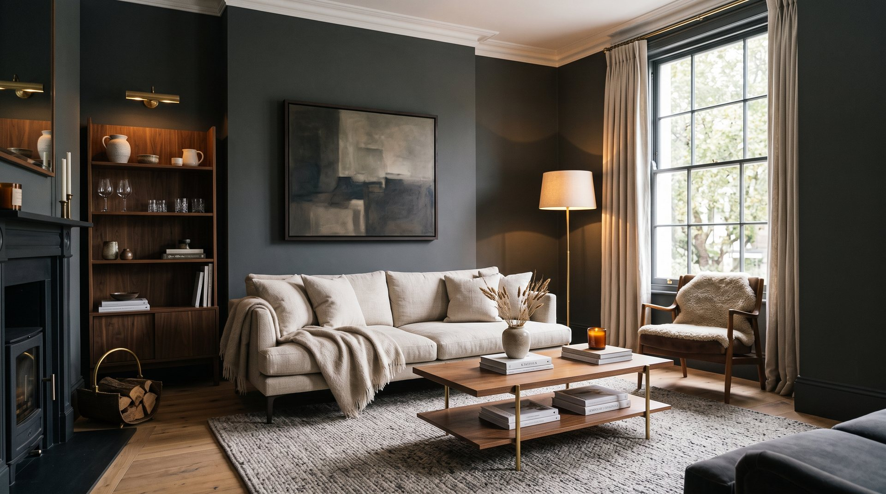
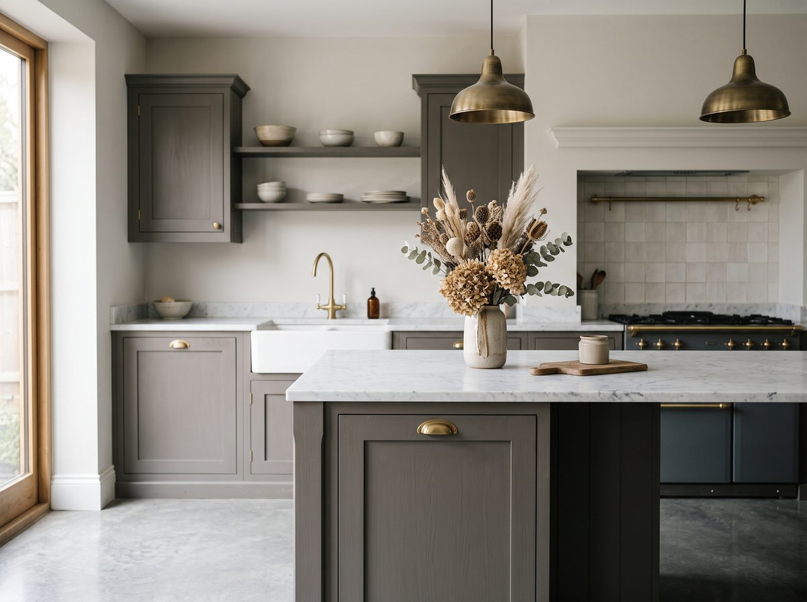
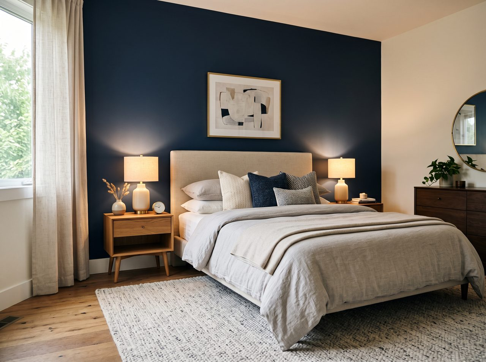

Decorated once, and decorated properly.
From a single freshly finished room to a full exterior, every project is approached the same way — the right preparation first, the right materials for the surface, and a finish held to a standard Greg is willing to put his name to. Below is what the work covers.

Interior painting & decorating
Walls, ceilings, woodwork, doors and feature rooms. The preparation is where the difference is made — filling, sanding, priming and caulking every junction so the topcoat goes on smooth and stays looking right. Whether it's one room, a full house, or a property being readied for sale, the work is methodical, the site is kept tidy, and the finish is clean.

Exterior painting
Masonry, render, woodwork, window frames, doors, fascias and garden walls. The Manchester weather is unforgiving, so preparation and the right weather-appropriate products matter as much as the finish itself — keeping exterior work looking sharp and standing up to the seasons.

Spray finishing
A smooth, even coating for suitable surfaces — a fast, consistent route to a high-quality finish where the method fits the job. Greg will give an honest view on whether spraying suits your project, or whether brushing and rolling will serve it better.

Wallpapering & finishing details
Hanging and pattern-matching wallpaper, with the surface preparation that separates a tidy result from a flawless one — cross-lining where it's needed so patterns sit true and edges stay flat. Plus the door repairs, minor carpentry fixes and finishing touches that complete a job properly.

Full-house & pre-sale redecoration
Complete interior and exterior redecoration — for refreshing an entire home or preparing a property to present at its best. Clear start and finish dates, kept to, with a finish that shows the space at its very best.
Clear from the first conversation to the final walk-round.
Greg believes communication is what makes a job run smoothly. He takes the time to understand exactly what you want, talks through what's included, and keeps you informed at every stage — so there are no surprises, only the finish you were promised.
- Thorough preparation — the part that makes a finish last
- Clear on scope, timing and what to expect
- Your home protected and respected throughout
- A finish Greg is happy to put his name to
Talk it through with Greg.
Not certain which approach your job needs? A brief conversation usually settles it — Greg will talk through the options and arrange a no-obligation quote.